Do you know why the racing horses' eyes are covered with blinkers or blinders? These blinders are made up of leather or plastic. These are placed on both sides of the horse.
It reduces the angle of the horses' vision by over 75%, but still, all the riders (especially in the races) use it. Are they crazy?
Image Courtesy – Mohamed Noval (unsplash)
The reason is pretty simple and straightforward.
Horses have eyes at the sides of their face, which means they have peripheral vision. It can easily provoke the horse to run in any direction unless they are made to remain focused.
When the riders attach blinders, it will cover the side angle vision and focus ahead. With this device's help, racing horses concentrate better on the target, and they can run with astonishing speed.
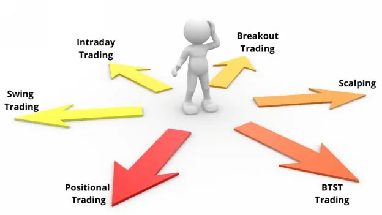
The same logic applies to all traders. We have many trading types, such as Swing Trading, Positional Trading, Trend Following, etc. If I stop at this point, traders will take trades in all possible trading styles and lose money. So, I will cover a few critical trading styles, and you can pick any one trading style which suits your personality. Please note, there is no need to implement all of them in your trading.
Swing trading is a trading technique that seeks to capture a full swing when the price goes to a complete sideways zone.
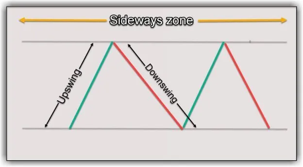
Image 5.1 – Swing Trading
The idea is to get out of the trade before the opposing pressure comes in. It means you look to book your profits before the market reverses.
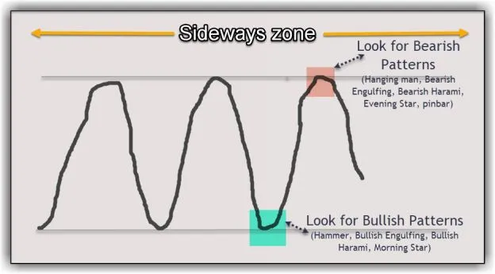
Image 5.2 – Swing Trading Strategy
Identify a range-bound stock or index as the first step. For a long trade, look for bullish candlestick patterns such as – Bullish Engulfing, Bullish Harami, Hammer, Morning Star. If you see the price confirmation, opt for a long trade above the chart pattern's high, keeping a stop-loss below the low of the chart pattern. You can aim for the next resistance line as your target. Plan the trade only if the risk-reward is greater than 1:2.
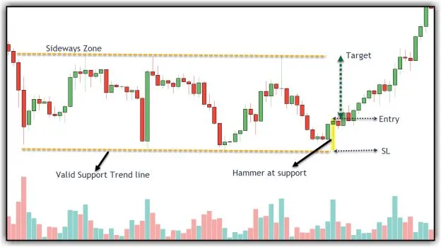
Image 5.3 – Swing Trading ‘Long’ trade example-1
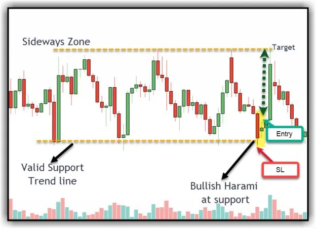
Image 5.4 – Swing Trading ‘Long’ trade example-2
Image 5.3 and image 5.4 are examples for long trades in swing trading using candlestick patterns. In both cases, the price is in a sideways trend. There was a good support trend line, and the price displayed candlestick confirmation (Hammer in 5.3 and Bullish Harami in 5.4). Hence, a long trade can be planned above the high of the confirmation candle, keeping a stop-loss below the confirmation candle's low. The target will be the next resistance zone, as highlighted in the image. For a short trade, look for bearish candlestick patterns such as – Bearish Engulfing, Bearish Harami, Hanging man, Evening Star, pin bar. If you see the price confirmation, opt for a short trade below the chart pattern's low, keeping a stop-loss above the high of the chart pattern. You can aim for the next support line as your target. Plan the trade only if the risk-reward is greater than 1:2.
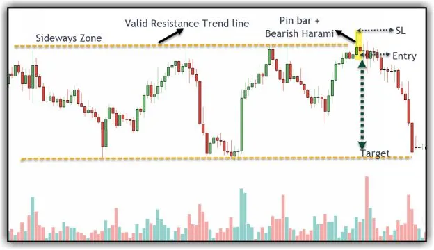
Image 5.5 – Swing Trading ‘Short’ trade example-1
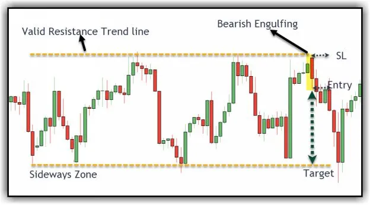
Image 5.6 – Swing Trading ‘Short’ trade example-2
Image 5.5 and image 5.6 are examples of short trades in swing trading using candlestick patterns.
In both cases, the price is in a sideways trend. There was a good resistance trend line, and the price displayed candlestick confirmation (pin bar + bearish harami in 5.5 and bearish engulfing in 5.6). Hence, a short trade can be planned below the low of the confirmation candle, keeping a stop-loss above the confirmation candle's high. The target will be the next support zone, as highlighted in the images.
In this system, ‘Trend’ plays a crucial role as all the trades will come in the direction of the trend.
For long trades, the prior trend should be on the upside. If the price shows healthy correction and a candlestick pattern, one can plan a long trade.
For short trades, the prior trend should be down. If the price shows a bounce and a candlestick pattern, one can plan a short trade.
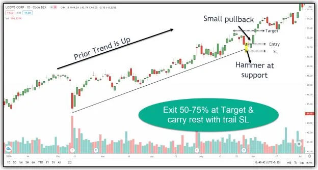
Image 5.7 – Trend Following ‘Long’ trade in Loews Corp
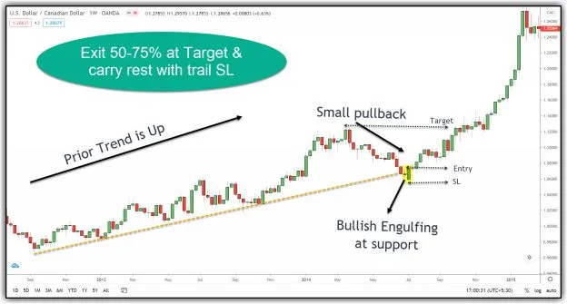
Image 5.8 – Trend Following ‘Long’ trade in USD-CAD
Images 5.7 and 5.8 are simple examples for long trades using the trend following technique. In both the cases, the prior trend is up, there was a healthy pullback, and candlestick confirmation occurred exactly at the support trend line (‘hammer’ in 5.7 and ‘bullish engulfing’ in 5.8). A trader can plan a long trade above the high of the confirmation candle, keeping a stop-loss below the low of the confirmation candle. The previous swing high is the safe target (as the primary trend is up). Hence, we can plan to exit 50-75% of the position at the target and carry the remaining position by trailing stop-loss below every swing low. Trailing stop-loss is the most critical aspect of the trend following system as you never know where the trend will stop. In fact, it is the core logic in this trading approach. Sometimes, profits in one trade (using trailing S.L.) can absorb the loss of many failed trades.
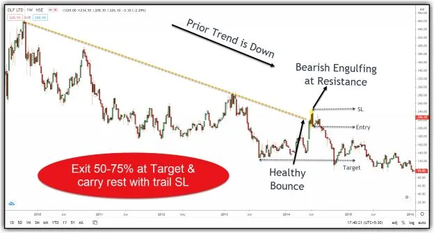
Image 5.9 – Trend Following ‘Short’ trade in DLF
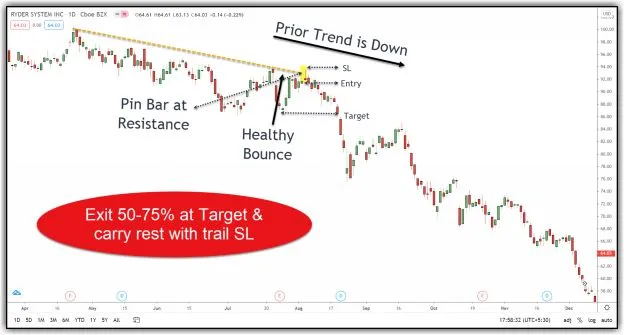
Image 5.10 – Trend Following ‘Short’ trade in Ryder System
Images 5.9 and 5.10 are the simple examples for short trades under the trend following technique. In both cases, the prior trend is down, there was a healthy bounce, and candlestick confirmation exactly at the resistance trend line (‘bearish engulfing’ in 5.9 and ‘pin bar’ in 5.10). A trader can plan a short trade below the low of the confirmation candle, keeping a stop-loss above the high of the confirmation candle. The previous swing low is the safe target (as the primary trend is down). Hence, we can plan to exit 50-75% of the position at the target and carry the remaining position by trailing stop-loss above every swing high. ‘Swing Trading’ and ‘Trend Following’ are the two simple trading systems, and we can apply price action strategies directly in them. If you are a beginner or an intermediate level trader, mastering any one of these strategies is more than enough to taste success in trading. The next chapter contains some advanced trading topics and a few trading systems based on those concepts. Again feel free to skip it if you are a beginner and go to chapter-7 directly.
A breakout trade opportunity is nothing but a stock price moving outside a defined resistance level with increased volume.
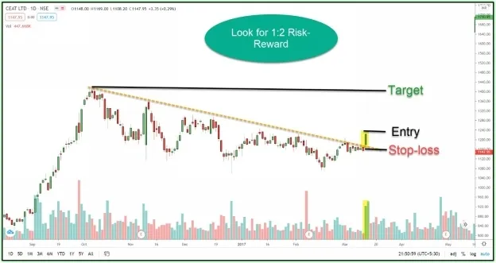
Image 5.11 – Breakout Trading System
A breakout trader enters a long position after the price breaks above the resistance level, keeping a stop-loss below the resistance. In this process, they either trail their stop-losses or target to exit at higher levels to make profits.